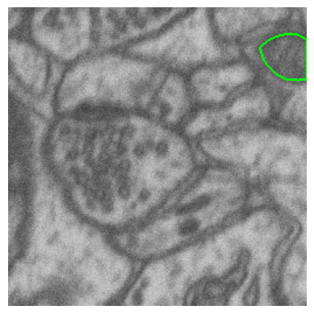
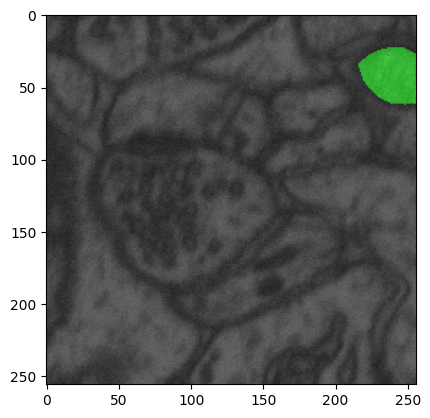
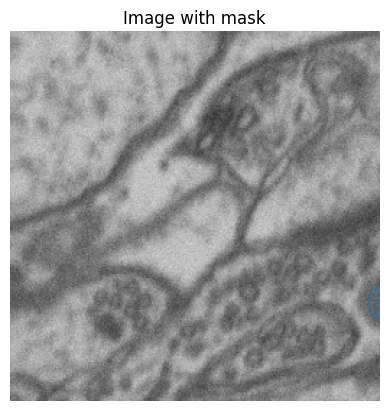
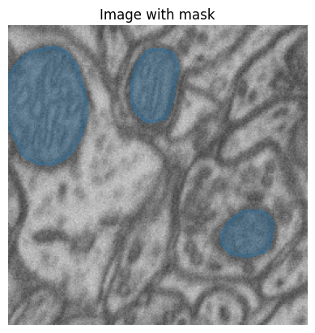
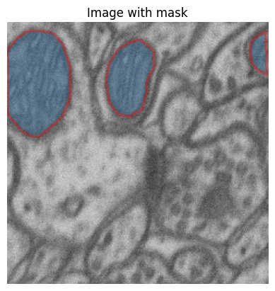

from yolo_v8_segmentation.viz_utils import *yolo_v8_segmentation
segementation training and inference with yolov8 model
This file will become your README and also the index of your documentation.
Install
pip install yolo_v8_segmentationHow to use
Visualize mask and image
msk_path = Path(r'/home/hasan/Schreibtisch/projects/data/microscopy/patch_train_masks')
img_path = Path(r'/home/hasan/Schreibtisch/projects/data/microscopy/patch_train_images/')idx = 2
image = img_path.ls()[idx]
msk = msk_path.ls()[idx]overlay_mask_border_on_image
overlay_mask_border_on_image (im_path, msk_path, border_color=(0, 1, 0), border_width=1)
*Overlays the border of a binary mask on a grayscale image and displays the result using matplotlib.
Args: image (numpy.ndarray): Grayscale image. mask (numpy.ndarray): Binary mask of the same size as the image. border_color (tuple): RGB color for the mask border in the range [0, 1]. border_width (int): Width of the border.
Returns: None: The function displays a plot.*
overlay_mask_border_on_image(im_path=image, msk_path=msk)
overlay_mask(im_path=image, msk_path=msk)
Yolo annotation visualization
- Upto now it is just a folder where there are some image and mask pairs. Previous method shows the masks and images
- In case data is prepared in
.txtformat for training yolo, it is important to check it whether the annotations are correct or not. This function will help to visualize the annotations on the image.
yolo_mask_path = Path(r'/home/hasan/Schreibtisch/projects/data/microscopy/yolo_dataset_train')
im_path = Path(r'/home/hasan/Schreibtisch/projects/data/microscopy/patch_train_images/')overlay_yolo_mask(im_path=im_path, msk_path=yolo_mask_path)
- in case specific image wanted to see, then one need to pass the image name to the function
- here I am using im_name=None, so random image is selected
overlay_yolo_mask(im_path=im_path, msk_path=yolo_mask_path, im_name=None, fill=True, alpha=0.3)
overlay_yolo_mask(
im_path=im_path,
msk_path=yolo_mask_path,
im_name=None,
color='red',
fill=True,
alpha=0.3)
Convert label to yolo format
First coco format json file
- Normaly there are some labelling tool where you can label your images and then upload them direct in the yolo format.
- But we are supossing that, you have some binary masks and then you want to convert them to yolo format.
- First we will convert to coco format and then to yolo format.# in my case I have only one class and others are background, in case of more class, one should add name and id for the masks
category_ids = {
"object": 1,
}# where masks(in my case binary masks) are stored
trn_msk_path = Path(r'/home/hasan/Schreibtisch/projects/data/microscopy/patch_train_masks')
# this will be json path for the coco format
trn_json_path = Path(r'/home/hasan/Schreibtisch/projects/data/microscopy/patch_train_masks/train.json')
process_masks(
mask_path=trn_msk_path,
json_path=trn_json_path,
category_ids=category_ids)Now coco foramt
create_yolo_dataset(
img_path=trn_img_path,# train images path
output_path=trn_output_path, # output for each image normally some txt file
json_path=trn_json_path, # json path for coco format
)# for yolo to run one needs to create a yaml file to tell where the data is situated
# coco expect following format
# train: /path/to/train/images
# label: /path/to/train/labels
# valid: /path/to/valid/images
# valid_label: /path/to/valid/labels
create_yaml(
json_path=trn_json_path, # coco format json path
yaml_path=f'{path}/data.yaml', # yaml path for saving
train_path=yolo_trn_images, # where train images are stored
val_path=trn_img_path, # where validaiton images are stored
)